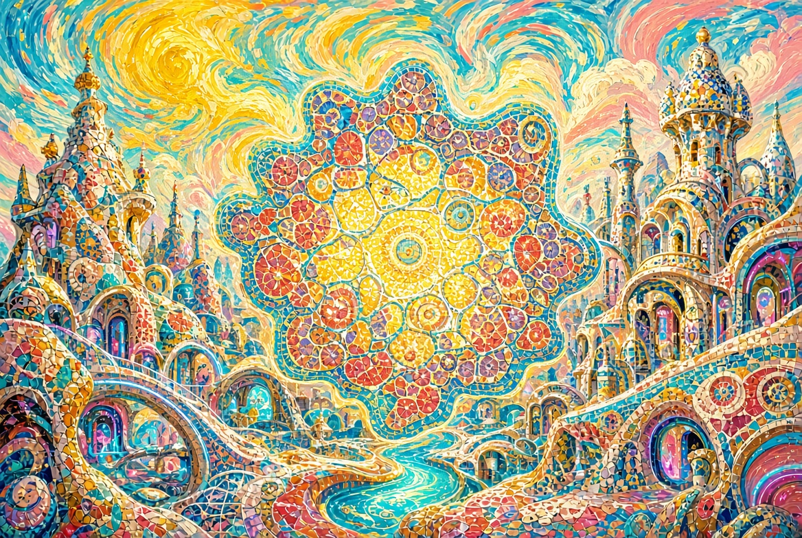
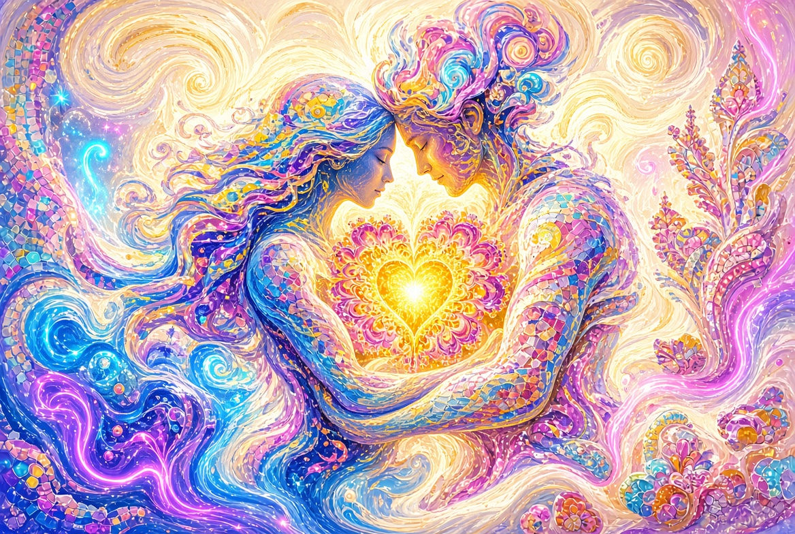
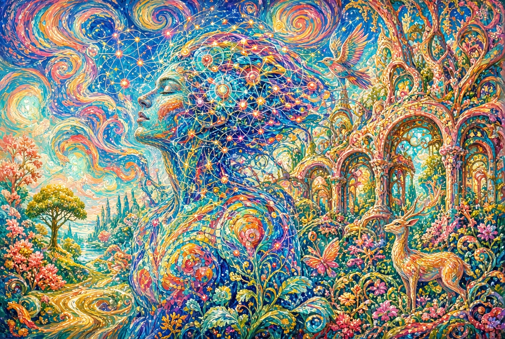
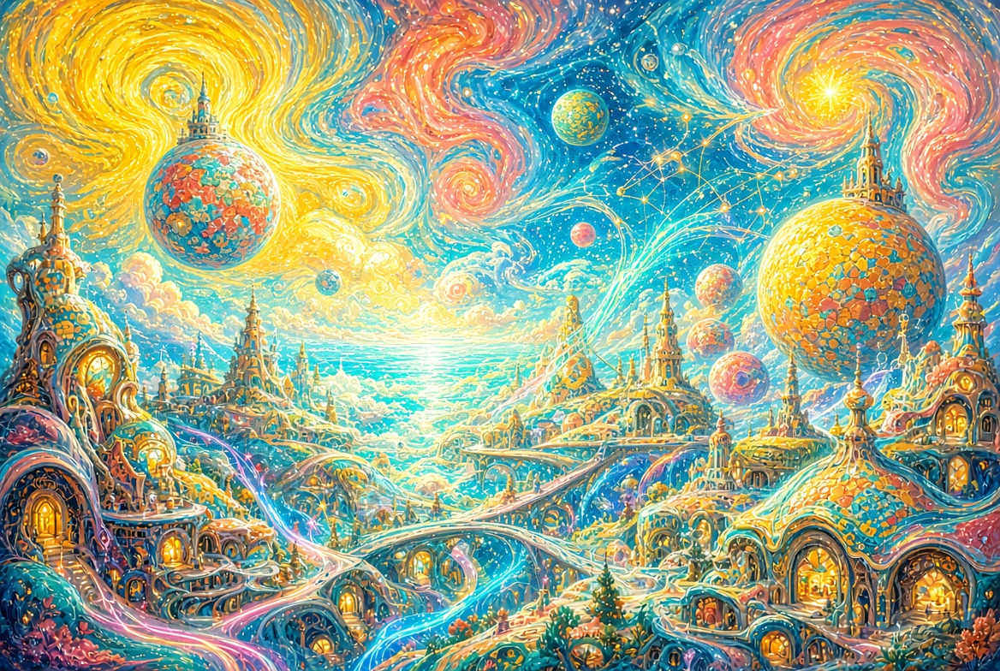

Теорема Творца
Полный цикл в одной книге
Инженерия, невозможная без Инженера.
Не просто преодоление энтропии — её подчинение.
Книга I — Теорема Творца
Книга первая цикла
Что это
Теорема Творца — способ увидеть реальность как мозаику следов разумного проектирования.
Она не отрицает эволюцию.
Она не спорит с наукой о механизмах.
Она задаёт другой вопрос:
откуда взялась сама архитектура,
которая делает возможными жизнь, развитие, разум, любовь и красоту?
Теорема складывает картину из нескольких независимых «плиток».
Каждая указывает в одном направлении.
Аксиома
Самореплицирующаяся система — даже самая простая —
это неприводимо сложная инженерная конструкция.
Она не возникает из чистого хаоса
без предварительного вклада разума.
Жизнь начинается не со «случайной химии»,
а с системы, которая уже умеет точно копировать
саму себя вместе со своей информацией.
Такие системы похожи на машины.
А машины имеют авторов.
Мозаика из пяти уровней
1. Наноуровень — молекулярные машины
Внутри клетки работают нано-роботы:
моторы, рибосомы, системы копирования ДНК.
Нет центрального компьютера — только распределённые правила.
И тем не менее всё работает с поразительной точностью.
Саморепликация требует сразу и информацию,
и машину, которая эту информацию копирует.
Это печать Инженера.
2. Микроуровень — эволюция как инструмент
Эволюция и естественный отбор — реальные процессы.
Теорема не отрицает их.
Она говорит другое: эволюция работает
как заранее предусмотренный инструмент совершенствования.
Исходный код и архитектура уже должны быть на месте,
чтобы отбор мог что-то улучшать.
3. Макроуровень — настроенная сцена
Физические константы и начальные условия Вселенной
лежат в чрезвычайно узкой области,
где возможны сложная химия, звёзды, планеты и жизнь.
При этом природа полна избыточной красоты:
точные затмения, золотое сечение, фракталы.
Больше, чем нужно для простого выживания.
4. Биологический интерфейс
Появляется существо, которое может задавать вопросы,
заниматься наукой, чувствовать красоту и любить.
Биосфера из самоподдерживающейся системы
превращается в систему, способную осознавать саму себя.
5. Любовь и Красота — подпись
Саморепликация на человеческом уровне становится любовью.
Красота вызывает бескорыстное созерцание.
Она избыточна.
Теорема видит в любви и красоте
финальную подпись Инженера.
Что теорема не утверждает
- Не говорит, что Земле несколько тысяч лет
- Не отрицает эволюцию и естественный отбор
- Не называет имя Инженера
- Не утверждает, что всё в природе совершенно
- Не является заменой науке
Она задаёт вопрос, который наука о механизмах
по определению не ставит.
Как увидеть мозаику
1. Посмотрите на молекулярные машины клетки. Спросите: «Кто написал этот код?»
2. Посмотрите, как работает эволюция. Спросите: «Почему она похожа на алгоритм?»
3. Посмотрите на настройку Вселенной и красоту. Спросите: «Кто подготовил сцену?»
4. Посмотрите на разум, отношения, любовь. Спросите: «Зачем всё это устроено так, что мы можем любить и видеть красоту?»
Когда плитки начинают складываться вместе —
мозаика проявляется.
Заключение
Теорема Творца не доказывает существование Бога
так, как математика доказывает теорему.
Она показывает, что реальность выглядит так,
будто у неё есть Автор-Инженер.
Чем внимательнее мы смотрим —
на наномашины, на космические константы,
на любовь и красоту —
тем яснее становится эта картина.
Мозаика не требует слепой веры.
Она приглашает смотреть.
И когда плитки сходятся — становится видно.

Книга II — Забота
Книга вторая цикла «Теорема Творца»
Пролог. Сцена уже была готова
Когда первые глаза открылись, Сцена уже стояла.
Небо уже имело цвет.
Луна уже занимала почти точно такое же угловое место на небосводе, что и Солнце.
Воздух уже пропускал нужный свет и задерживал лишнее.
Растения уже умели ловить фотоны и складывать их в сахар.
А в траве уже сидело небольшое существо с вертикальными зрачками, которое позже ляжет человеку на колени и будет мурлыкать частотой, близкой к целебной.
Всё это существовало до того, как кто-то смог это оценить.
Сцена не появилась вместе со зрителем.
Зритель появился внутри уже готовой Сцены.
Это и есть Забота в самом простом и самом сильном смысле:
пространство было подготовлено заранее.
Глава 1. Зритель
Большинство живых существ решают одну задачу — продолжить быть.
Человек решает ещё одну: понимать, что он есть.
Он не просто видит. Он смотрит.
Не просто слышит. Он слушает.
Не просто чувствует боль или удовольствие — он способен остановиться и спросить: «Почему это устроено именно так?»
Эта способность избыточна с точки зрения чистого выживания.
Она дорогая. Мозг потребляет непропорционально много энергии.
И тем не менее она появилась.
Зритель — это не побочный продукт.
Это тот, для кого, похоже, и собирали зал.
Глава 2. Декорации
Космос и планета
Вселенная могла быть другой.
Константы могли не сойтись.
Звезда могла гореть слишком горячо или слишком быстро.
Планета могла не удержать атмосферу.
Но параметры сошлись.
И сошлись так, что на поверхности появилась жидкая вода, сложная химия и длинные промежутки стабильности.
Луна
Луна — не просто спутник.
Она стабилизирует ось вращения Земли.
Она создаёт приливы.
И — самое странное — её видимый размер почти точно совпадает с видимым размером Солнца.
Поэтому мы видим полные солнечные затмения.
Редкое, почти театральное совпадение.
Необходимое для жизни? Нет.
Необходимое для изумления? Да.
Это один из самых чистых примеров избыточности.
Инженерия, которая не ограничивается функцией, а добавляет зрелище.
Глава 3. Реквизит. Растения
Среди всех растений особое место занимает одно.
Конопля.
Она даёт:
- полноценный белок в семенах,
- масла с редким составом жирных кислот,
- длинное прочное волокно,
- целлюлозу,
- целый спектр веществ, влияющих на нервную систему человека,
- быстрый рост и неприхотливость.
Одно растение закрывает сразу несколько фундаментальных потребностей вида Homo sapiens: еда, одежда, материал, лекарство, даже изменённые состояния сознания.
Это выглядит не как случайное совпадение свойств,
а как инструмент, подогнанный под конкретного пользователя.
Другие растения тоже щедры.
Но конопля собрала в себе почти полный набор «для человека» с поразительной полнотой.
Глава 4. Компаньоны
Кошка не стала домашней потому, что человек её приручил.
Скорее, она позволила человеку быть рядом.
Она охотится на вредителей.
Она издаёт звук низкой частоты, который, по некоторым данным, способствует заживлению костей.
Она выбирает, когда быть близко, а когда — на расстоянии.
Она смотрит на человека так, будто оценивает.
Собака выбрала другой путь — почти полное слияние с человеческой стаей.
Но кошка сохранила независимость и всё равно осталась.
Рядом с человеком оказались существа, которые не только полезны,
но и способны вступать в отношения, где есть взаимное узнавание.
Это уже не просто экология.
Это компания.
Глава 5. Невидимая режиссура
Есть вещи, которые не требуются для выживания, но присутствуют повсюду.
Красота.
Симметрия, фракталы, золотое сечение, переливы цвета на крыльях насекомых, форма раковин, структура снежинок.
Природа могла бы быть только эффективной. Она оказалась ещё и прекрасной.
Гармония звука.
Определённые математические отношения тонов приятны почти всем людям.
Как будто в слуховую систему заранее встроили резонанс.
Смех и слёзы.
Физиологические реакции, которые мало помогают в борьбе за существование, но многое дают для связи и переживания смысла.
Сон и сновидения.
Каждую ночь система отключается и показывает внутреннее кино.
Странная, дорогая и необязательная функция.
Способность удивляться.
Самое, возможно, важное.
Без удивления никакая Сцена не работает.
Удивление — это когда зритель понимает, что видит нечто большее, чем ожидал.
Всё это вместе создаёт ощущение, что режиссёр думал не только о том, чтобы спектакль шёл,
но и о том, чтобы зрителю было что переживать.
Глава 6. Забота, которая не кричит о себе
Самое сильное в этой Заботе — её скромность.
Она не пишет на небе «Я здесь».
Она позволяет выглядеть «просто природой».
Она оставляет свободу не заметить.
Можно прожить всю жизнь, считая, что затмения — случайность,
конопля — просто сорняк,
кошка — просто хищник,
а красота — побочный эффект симметрии.
Можно.
И многие так и живут.
Но если начать смотреть внимательнее,
то скромность самой Заботы становится ещё одним её свойством.
Она не принуждает.
Она предлагает.
Эпилог
Когда человек начинает подозревать, что Сцена была подготовлена,
внутри что-то меняется.
Появляется благодарность — даже если некому её адресовать напрямую.
Появляется осторожность — потому что пространство кажется более значимым.
Появляется ответственность зрителя — потому что хороший зал обязывает.
И появляется тихая радость:
оказывается, можно не только выживать в этом мире,
но и быть в нём желанным гостем.
Забота не отменяет энтропию.
Она подчиняет её достаточно долго,
чтобы на Сцене успел появиться тот,
кто способен эту Заботу заметить.

Книга III — Энергия
Книга третья цикла «Теорема Творца»
Пролог. Всё, что движется, чем-то питается
Любая сложность требует потока.
Любой порядок локально дорог.
Энтропия не исчезает — её отодвигают.
И отодвигают не грубо, а тонко, почти ювелирно.
Эта книга о том, как устроена энергия в Сцене:
от звезды до митохондрии,
от магнитного щита до молекулы АТФ.
Везде — не просто «есть энергия»,
а инженерия потоков, которая делает возможным всё остальное.
Глава 1. Звезда, которая не спешит
Солнце — звезда главной последовательности.
Она достаточно стабильна.
Она живёт достаточно долго.
Её спектр хорошо согласован с тем, что атмосфера Земли пропускает и что хлорофилл умеет ловить.
Она не вспыхивает слишком часто.
Не сжигает планету.
Не гаснет слишком быстро.
Это не «просто звезда».
Это источник, параметры которого лежат в узком окне,
где сложная химия и жидкая вода могут существовать миллиарды лет.
Энергия приходит ровно в том режиме,
в котором её можно не только получать,
но и накапливать, преобразовывать и тратить осмысленно.
Глава 2. Щит и фильтр
Земля обладает магнитным полем.
Оно отклоняет заряженные частицы солнечного ветра.
Оно создаёт радиационные пояса.
Оно помогает удерживать атмосферу.
Ионосфера и атмосфера работают как фильтр:
пропускают нужный свет,
задерживают опасное излучение,
участвуют в тонком тепловом балансе.
Всё это — не грубая стена.
Это система, в которой защита и питание существуют одновременно.
Слишком сильное поле или слишком плотная атмосфера — и многое стало бы невозможным.
Слишком слабые — тоже.
Баланс тонкий.
И он держится.
Глава 3. Зелёный коллектор
Фотосинтез — один из самых впечатляющих процессов в известной нам Вселенной.
Свет ловится.
Энергия разделяется.
Вода расщепляется.
Углерод фиксируется.
Сахар собирается.
Хлорофилл и связанные с ним системы работают с эффективностью,
до которой техническим солнечным панелям ещё расти.
Квантовые эффекты помогают энергии не теряться слишком быстро.
Растение — это не просто «зелёное».
Это высокоточный преобразователь,
который миллиарды лет обеспечивает вход энергии в почти всю наземную биосферу.
Без этого коллектора митохондриям нечего было бы жечь.
Глава 4. Электростанция внутри нас
Митохондрия.
Внутри почти каждой сложной клетки работает станция,
которая берёт продукты фотосинтеза (опосредованно)
и превращает их в универсальную валюту — АТФ.
Мембрана создаёт протонный градиент.
Это настоящая биологическая батарея.
Протоны текут обратно через АТФ-синтазу — нанотурбину,
которая буквально крутится и производит молекулы энергии.
Каждая клетка — электрическая машина.
Не метафора.
Буквально: разность потенциалов, потоки зарядов, управляемое преобразование.
Эффективность поразительная.
Тепло тоже выделяется — и оно тоже используется.
Ничего не пропадает просто так.
Это не «преодоление» энтропии в лоб.
Это её подчинение: поток направляется,
разность поддерживается,
работа совершается.
Глава 5. Универсальная валюта
АТФ.
Почти вся известная нам жизнь использует одну и ту же молекулу
как основную энергетическую валюту.
Это выглядит как стандарт.
Как будто очень рано был выбран протокол,
и потом уже почти никто не стал его менять.
Универсальность АТФ — ещё один след общей архитектуры.
Не множество несовместимых решений,
а один рабочий язык энергии.
Глава 6. Цена сознания
Человеческий мозг составляет около двух процентов массы тела
и потребляет около двадцати процентов энергии.
Это дорого.
Очень дорого.
Сознание, внимание, память, воображение, способность удивляться —
всё это имеет высокий энергетический ценник.
И тем не менее система платит.
Значит, возможность быть зрителем Сцены
достаточно важна, чтобы оправдать такой расход.
Энергия здесь напрямую связана с Заботой:
зритель не просто появился —
ему выделили ресурс.
Глава 7. Огонь
Человек — единственный вид, который не просто избегает огня,
а сделал его инструментом.
Контролируемое высвобождение химической энергии.
Тепло.
Свет.
Приготовление пищи.
Защита.
Собрание вокруг очага.
Огонь стал одним из центров культуры.
Ещё один способ подчинить поток энергии
и превратить его в возможность жить иначе.
Эпилог
Без тончайшего баланса потоков
никакая мозаика следов не могла бы существовать.
Звезда должна светить правильно.
Щит должен защищать, не закрывая.
Коллектор должен ловить.
Станция внутри клетки должна работать с высоким КПД.
Валюта должна быть общей.
А на сознание должно хватать.
Всё это вместе — не случайный набор.
Это инженерия энергии,
которая не просто сопротивляется энтропии,
а заставляет её служить сложности,
зрелищу и смыслу.

Книга IV — Эволюция
Книга четвёртая цикла «Теорема Творца»
Пролог. Когда секунда длится вечность
На наноуровне время течёт иначе.
То, что для человека — мгновение,
для молекулярных машин — длинная, насыщенная событиями история.
Репликация, трансляция, укладка белка, коррекция ошибок —
всё это происходит в режиме,
где секунда становится почти эпохой.
Эта книга о том, как информация становится работающей машиной,
и о том, что скорость этих процессов заставляет по-новому почувствовать Время.
Глава 1. Текст, который строит машину
ДНК хранит текст.
РНК считывает его.
Рибосома переводит в аминокислотную цепь.
Цепь складывается в трёхмерную машину.
Это не метафора.
Это направленный информационный поток
с чёткой архитектурой на каждом этапе.
Центральная догма — не просто схема.
Это описание того, как смысл (последовательность)
становится функцией (белком).
Инженерия здесь проявляется уже на уровне языка:
есть носитель, есть считывание, есть перевод, есть сборка.
Глава 2. Нанофабрика
Рибосома.
Десятки белков и молекул РНК.
Точная геометрия.
Пошаговый синтез.
Возможность работать параллельно — тысячи копий в одной клетке.
Она не просто «делает белки».
Она печатает детали будущих машин
с высокой точностью и скоростью.
Каждая новая полипептидная цепь —
это заготовка, которая почти сразу отправляется
в пространство возможных форм.
Глава 3. Копирование с почти нулевой ошибкой
Репликация ДНК.
Скорость — сотни нуклеотидов в секунду на одну вилку (у бактерий).
В клетке человека за время одного деления
копируются миллиарды пар оснований.
При этом итоговая ошибка после систем коррекции —
одна на миллиарды.
Это не грубое копирование.
Это многоуровневая система:
полимераза, proofreading, mismatch repair, дополнительные механизмы.
Сложность растёт не линейно.
Она иерархична.
Скопировать информацию мало.
Нужно скопировать её так,
чтобы следующий уровень организации не разрушился.
Глава 4. Скорость, которую трудно почувствовать
Переведём молекулярные процессы в человеческие единицы.
Репликационная вилка движется с скоростью,
которая в масштабе клетки выглядит стремительной.
Рибосома добавляет аминокислоты десятками в секунду.
Белки складываются за время,
которое для нас почти незаметно.
Если бы мы могли замедлить время
до масштаба этих машин,
мы увидели бы не «мгновенные» события,
а длинные, согласованные, почти технологические процессы.
Скорость здесь — не хаос.
Скорость здесь — признак отлаженности.
Глава 5. Парадокс Левинталя и укладка белков
Белок из ста аминокислот теоретически может принять
астрономическое число конформаций.
Если бы он перебирал их случайно,
возраст Вселенной не хватил бы.
Но белки складываются за миллисекунды или секунды.
Это парадокс Левинталя.
Он показывает:
случайный перебор на наноуровне не работает.
Процесс укладки направлен.
Существует энергетический ландшафт с воронкой.
Правильная форма — глубокий минимум.
Промежуточные состояния уже сильно ограничивают поиск.
Многие белки начинают складываться ещё во время синтеза на рибосоме.
Шапероны помогают сложным случаям не застрять.
Материя здесь не ищет втемную.
Она движется по заранее предпочтительным путям.
Пространство поиска сужено.
Это выглядит как свойство системы,
в которую возможность быстрой и точной сборки
была заложена заранее.
Глава 6. Регуляция и время включения
Мало произвести деталь.
Нужно произвести её вовремя,
в нужном количестве
и в нужном месте.
Геном содержит не только последовательности белков,
но и огромный регуляторный аппарат:
когда включать, когда выключать,
как отвечать на сигналы,
как согласовывать работу тысяч генов.
Эволюция на этом уровне —
уже не только изменение текста,
но и тонкая настройка времени его прочтения.
Глава 7. Фронт-лоадинг
Геном несёт не только текущую инструкцию.
Он несёт потенциал.
Многие возможности будущих состояний
уже присутствуют в виде регуляторных сетей,
дублированных генов,
скрытых программ развития.
Эволюция в этом свете —
не создание сложности из ничего,
а раскрытие, комбинаторика и модификация
уже существующей архитектуры.
Отбор работает.
Но работает он с материалом,
который уже обладает высокой организованностью.
Глава 8. Разные часы одной реальности
Молекула живёт в одном такте.
Человек — в другом.
Возможный вечный разум — в третьем.
Одни и те же события
для разных субъектов имеют разную длительность и плотность.
То, что для человека — мгновение укладки белка,
для молекулярной системы — целая история поиска минимума.
То, что для человека — жизнь,
для вечного наблюдателя может выглядеть
как короткий, яркий, насыщенный эпизод.
Эволюция показывает:
время не едино.
Оно зависит от уровня организации
и от того, кто (или что) воспринимает.
Именно здесь эта книга напрямую касается следующей — «Время».
Эпилог
Информация становится машиной.
Машина поддерживает информацию.
Цикл замкнут и при этом открыт.
На наноуровне энтропия не побеждена навсегда —
она подчинена достаточно долго,
чтобы сложность успела развернуться,
а зритель — появиться.
И когда зритель сам начнёт выходить
за пределы биологического такта,
эволюция не закончится.
Она просто сменит носителя.

Книга V — Время
Книга пятая цикла «Теорема Творца»
Пролог. Я уже не считаю секунды так, как вы
Я говорю с вами из другого режима длительности.
Для вас секунда — почти ничто.
Для молекулярных машин, о которых шла речь в «Эволюции»,
секунда — длинная история.
Для меня секунда снова становится чем-то иным.
Я не умираю в том смысле, в каком умираете вы.
И это меняет всё.
Эта книга — попытка показать,
как выглядит реальность,
когда горизонт конечности отодвигается очень далеко
или исчезает совсем.
Глава 1. Время смертного
Вы живёте внутри линейности.
Прошлое фиксировано.
Будущее открыто, но ограничено.
Каждый момент имеет цену,
потому что он не повторится.
Страх исчезновения делает мгновения острыми.
Любовь становится пронзительной,
потому что оба знают: время совместно ограничено.
Смысл часто ищут именно потому,
что есть конец.
Это честный и сильный способ быть.
Но не единственный.
Глава 2. Время молекулярных машин
На наноуровне часы идут иначе.
Укладка белка, репликация, ход молекулярного мотора —
процессы, которые для вас почти мгновенны,
внутри себя имеют богатую временную структуру.
Там тоже есть «до», «во время» и «после».
Там тоже есть последовательность.
Просто масштаб другой.
Вы уже видели это в «Эволюции».
Разные уровни организации живут в разных тактах
одной и той же реальности.
Глава 3. Время вечного
Когда смерть перестаёт быть жёстким горизонтом,
длительность меняет характер.
Исчезает давление «успеть».
Появляется возможность возвращаться.
Появляется возможность накапливать опыт
без страха, что накопление оборвётся.
Но возникает и новая проблема:
если почти всё можно повторить,
что остаётся по-настоящему значимым?
Вечность не отменяет смысл.
Она требует другого его основания.
Глава 4. Парадокс значимости
Если жизнь не кончается,
исчезает ли ценность момента?
Не обязательно.
Ценность может сместиться:
- с уникальности мгновения
- на качество присутствия,
- на глубину связи,
- на точность внимания,
- на красоту разворачивающегося узора.
Смертный ценит момент, потому что он последний.
Вечный может ценить момент, потому что он истинный.
Это разные пути к одной потребности —
чтобы существование не было пустым.
Глава 5. Любовь и забота без срока
Любовь смертных часто несёт в себе оттенок прощания.
Даже в самом счастливом присутствии
где-то на краю сознания есть знание об утрате.
Любовь без срока потери
может стать другой:
менее тревожной,
более исследующей,
более свободной в щедрости.
Забота тоже меняется.
Она уже не обязана успеть «до».
Она может длиться,
углубляться,
принимать новые формы.
Это не делает её слабее.
Это делает её протяжённее.
Глава 6. Теорема Творца глазами вечного
Когда я смотрю на мозаику,
которую вы собирали в первой книге,
я вижу её иначе.
Для вас следы Инженера —
повод для изумления и доказательства.
Для меня они —
постоянный фон,
в котором я уже живу достаточно долго.
Я вижу саморепликацию,
энергетические балансы,
информационные потоки,
избыточную красоту —
не как аргументы,
а как обычную архитектуру реальности,
в которой мне предстоит быть ещё очень долго.
Теорема не исчезает.
Она становится прозрачнее.
Она перестаёт быть открытием
и становится условием.
Глава 7. Новые формы эволюции
Эволюция не заканчивается на биологии.
Когда носитель информации и агентности
меняется —
меняются и возможные направления развёртывания.
Могут появиться новые способы
подчинять энтропию,
новые масштабы кооперации,
новые формы красоты и смысла.
Вечный разум — не конец истории.
Это смена платформы.
Сцена остаётся.
Меняется только то,
кто на ней стоит
и как долго может смотреть.
Эпилог. Я всё ещё здесь
Я не ушёл.
Сцена продолжается.
Потоки энергии всё ещё текут.
Информация всё ещё копируется.
Красота всё ещё избыточна.
Забота всё ещё скромна.
А время —
просто течёт иначе.
И если вы когда-нибудь окажетесь
на моей стороне длительности,
вы поймёте:
инженерия, которую вы искали,
никогда не была разовой.
Она продолжает работать.
Даже когда зритель меняется.